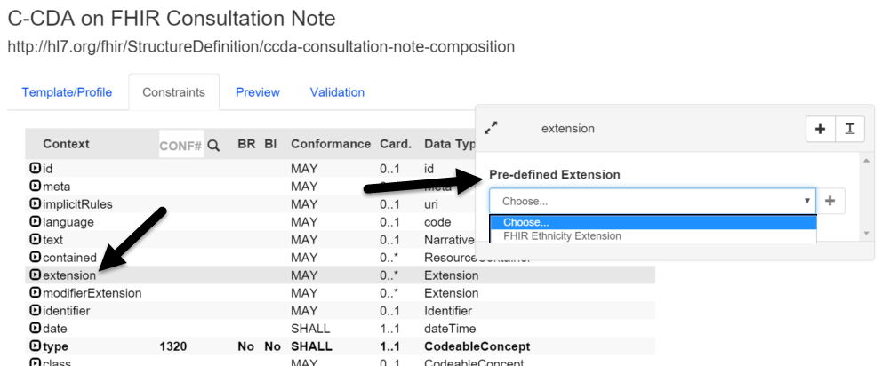
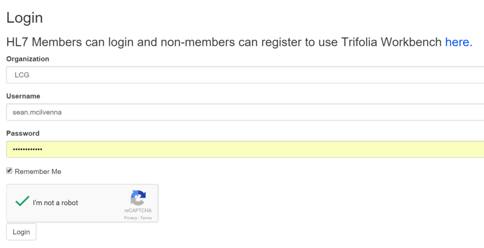

Version 3.0.0
Version 3.0.0
FHIR DSTU2 Support
Both Trifolia's FHIR REST API and the user interface have been improved to support FHIR profile designing.
- Bug fixes in the FHIR DSTU2 REST API
- Improvements to content-type and _format support in the REST API
- Profile editor enhancements for re-usable extensions
- Extensions supported directly on a profile
- Viewing a profile shows the JSON and XML representation of the profile
- General update to user interface (UI) to use the term "profile", "slice", and "descriminator"

Browsing / Editing Value Sets
Improvements to the UI to support very large value sets:
- A separate screen to view value sets so that larger value sets do not slow down the process of browsing/searching value sets
- Viewing a value set includes information about where the value set is used within Trifolia (i.e., which template/profile)
- A separate screen to support editing the codes/concepts of a value set

Human Verification During Login
Commercial users are now prompted to verify that they are a human during login.

Development Log
Issue Type |
Key |
Summary |
New Feature |
TRIF-921 |
Allow FHIR extensions on template meta-data |
New Feature |
TRIF-916 |
Add Captcha to Login screen |
New Feature |
TRIF-794 |
New Version of template - copy example from previous version |
New Feature |
TRIF-909 |
Remove closed template rules from Trifolia Schematron generation |
New Feature |
TRIF-984 |
Drop-down in constraint editor for FHIR extensions |
Improvement |
TRIF-981 |
Create interface to test REST API |
Improvement |
TRIF-978 |
Show template/profile relationships when viewing a value set |
Improvement |
TRIF-976 |
Create a separate screen for viewing a value set |
Improvement |
TRIF-977 |
Allow users to initiate terminology searches with <enter> key |
Improvement |
TRIF-964 |
Add export settings options to define the default behavior for missing primitive custom Schematron |
Improvement |
TRIF-967 |
Change "Templates" to "Templates/Profiles" globally |
Improvement |
TRIF-962 |
Use slice and descriminator when the IG type is FHIR |
Defect |
TRIF-979 |
cda prefix being used by export of Schematron for hqmf implementation guide |
Defect |
TRIF-968 |
Move generates error for unowned FHIR profiles |
Defect |
TRIF-915 |
Cardinalities no longer allow custom ranges e.g., [1..4] |
Defect |
TRIF-969 |
Value set - active status and date appear not to be working |
Defect |
TRIF-951 |
Statically bound valueSet not appearing in list of value sets on export screen |
Defect |
TRIF-895 |
Schematron Generation Branch Rules Issue |
Defect |
TRIF-953 |
Template will not load for editing |
Defect |
TRIF-826 |
HQMF Schematron contexts are completely wrong |
Defect |
TRIF-894 |
Invalid Schematron being generated for new extensions |